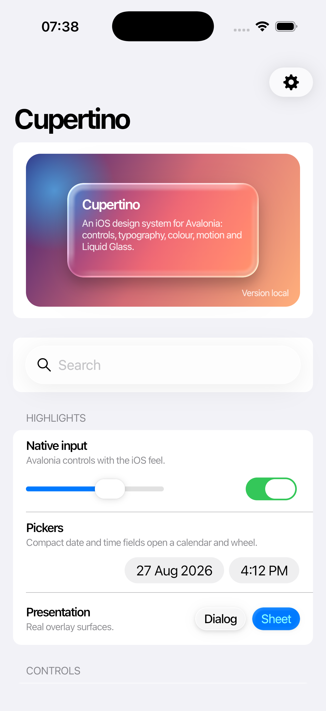

Gallery
samples/Cupertino.Gallery lets you try the controls, compare their states and view the source for each example.

Desktop
dotnet run --project samples/Cupertino.Gallery.Desktop
At 760 device-independent pixels and wider, the gallery keeps the catalogue on the left and opens samples on the right. Narrow windows use a single navigation stack with a back button. The same adaptive layout is used on every platform.
Screenshots and capture hooks
The desktop host can open one page and save a screenshot, which is how the reference captures in this repository are produced:
GALLERY_CAPTURE_STATE=1 dotnet run --project samples/Cupertino.Gallery.Desktop -- \
--page "Slider" --screenshot slider.png --dark
| Switch or variable | Effect |
|---|---|
--page "<title>" or GALLERY_PAGE |
Opens the catalogue entry with that title after the layout settles. |
--screenshot <path> |
Saves the window to a PNG once the page has rendered, then exits. |
--dark |
Starts in the dark theme variant. |
--scroll <pixels> or GALLERY_SCROLL |
Scrolls the opened page before the capture; a negative value scrolls to the end. |
--alert or --sheet |
Overlays an alert or an action sheet and also writes the overlay on its own to <path>_overlay.png. |
--hover |
Puts the first overlay action in its hovered and focused state. |
--noactions |
Shows the overlay without action buttons. |
GALLERY_CAPTURE_STATE=1 |
Pages fix their dates and open their representative popups so captures are repeatable. |
GALLERY_DUMP=1 |
The Side by Side page prints native and Avalonia control geometry to standard output. |
GALLERY_MOTION_CAPTURE=1 |
Adds the Motion Verification page on iOS; GALLERY_MOTION_TARGET, GALLERY_MOTION_RENDERER and GALLERY_MOTION_SEQUENCE select what it shows. |
The remaining switches in samples/Cupertino.Gallery.Desktop/Program.cs open the development lab windows used while matching native motion.
Mobile
The mobile projects are:
samples/Cupertino.Gallery.iOSsamples/Cupertino.Gallery.Android
The iOS gallery includes a Side by Side page with native controls for comparison on the iOS 26.2 Simulator. Use the desktop and Android galleries to check pointer, keyboard and touch behavior on those platforms.
WebAssembly
Install the WebAssembly tools once, then run the browser host:
dotnet workload install wasm-tools
dotnet run --project samples/Cupertino.Gallery.Browser
Publishing produces a static site at samples/Cupertino.Gallery.Browser/bin/Release/net10.0-browser/publish/wwwroot. The published documentation lives at jsuarezruiz.github.io/Cupertino.Avalonia, with the gallery under its /gallery/ path.
The source for each gallery page lives in samples/Cupertino.Gallery/Pages.